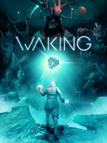

Waking
Details
|  | |
| Playtime | Not Played |
| Last Activity | Never |
| Added | 9/23/2023 13:57:39 |
| Modified | 9/23/2023 13:58:18 |
| Completion Status | Not Played |
| Library | Steam |
| Source | Steam |
| Platform | PC (Windows) |
| Release Date | 6/18/2020 |
| Community Score | |
| Critic Score | |
| User Score | |
| Genre | Adventure Indie Point-and-click |
| Developer | Jason Oda |
| Publisher | tinyBuild |
| Feature | Single Player |
| Links | Official Steam GOG Twitch |
| Tag | |
Description

Locked in the darkness of a coma, you dream. In the recesses of your mind, voices call you home, beckoning you towards the light and the void beyond. But it is not your time.
Not yet.
Waking is a uniquely personal journey of self reflection and remembrance combining third person exploration and real-world meditation. Traverse the twisted pathways of your mind in a quest to wake, and make choices that shape a uniquely individual experience. Along the way, face your fears and desires as you summon memories of loved ones, and do battle with those who would have you sleep forever.

Features
A true meditative experience - Waking blurs the line between fantasy and reality, taking you deep inside your mind both in-game and out. Third-person exploration melds with guided meditation techniques to create a new type of experience at the intersection of reflection, emotion and memory.A uniquely personal journey - Battle the forces of entropy surrounded by the ones you love. Waking asks you to draw on your own experiences, fears and desires and bring them with you on your journey to wake. Here in the dream your memories are your protectors, your companions and your weapons.
A world of dreams and nightmares - The Mindscape is a treacherous place, a shifting, twisted maze of shattered thoughts and errant memory. Explore the procedurally generated halls of your mind and experience a dreamworld unlike any other, rendered in stunning cinematic splendor.
A fight to survive. A fight to exist - Trapped within your dying mind you face a choice: give in to oblivion or fight for your existence. Waking’s unique combat system provides a new breed of challenge as you confront your own personal fears and call on aspects of the world itself in your battle against the darkness. Use your memories and willpower to uncover the mystery of your dreaming, and return to the waking world.